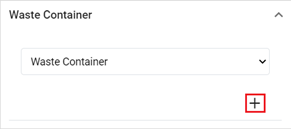

You must scan or upload an asset before completing the following steps.
Once you have saved the asset record, the fields in the Details section will become read-only, and the following subsections will display on the form: Waste Record, Waste Container, Inspections, Chemicals, and Asset Documents.
From the myCority Asset View, scroll down to thesubsection to which you want to add a record.
Click Add. The myCority <related record type> View will open.

Complete the myCority <related record type> Viewx form to the best of your ability, ensuring you provide a value for all required fields.
Click SaveandClose to save the record to the asset or Cancel to cancel the record.
The asset will display in the respective subsection of the asset record.